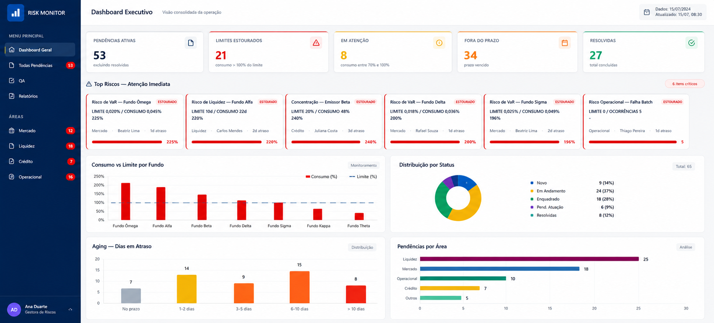
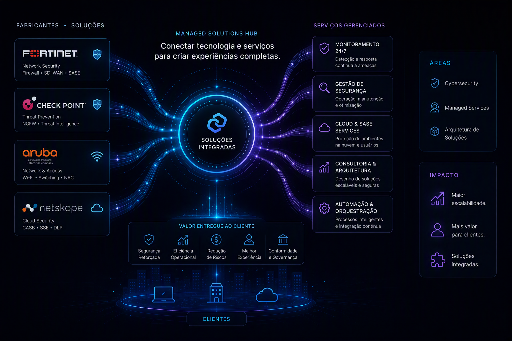
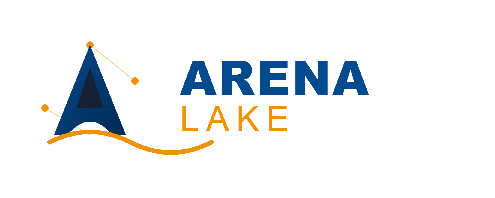

Projetos
Projetos que moldaram minha jornada
Cada projeto é uma etapa da minha evolução profissional – uma trajetória de crescimento, construção, aprendizado e impacto. Explore os marcos que me trouxeram até aqui.
Role para explorar↓Capítulo 01
Risk Monitoring Platform
Dados se transformando em visibilidade.
Consolidação de indicadores de risco em um ambiente unificado para apoio à tomada de decisão.

Os dados exibidos são fictícios. Dados reais não podem ser compartilhados por questões de confidencialidade.
Capítulo 02
Managed Solutions Hub
Ecossistema de conexões.
Desenvolvimento de produtos que combinam soluções de fabricantes com serviços gerenciados.

Capítulo 03
ArenaLake — Plataforma Acadêmica de Big Data
Democratiza o ensino de Big Data usando virtualização para substituir clusters físicos.
Ambiente pronto para prática com HDFS, PySpark e SQL, executável localmente sem necessidade de infraestrutura dedicada.

Uma progressão natural
Os projetos não são independentes. Cada um prepara o próximo – uma evolução de quem constrói, aprende e se prepara para o futuro.
Seção de Futuro
Próxima Fronteira
O melhor projeto ainda está por vir.